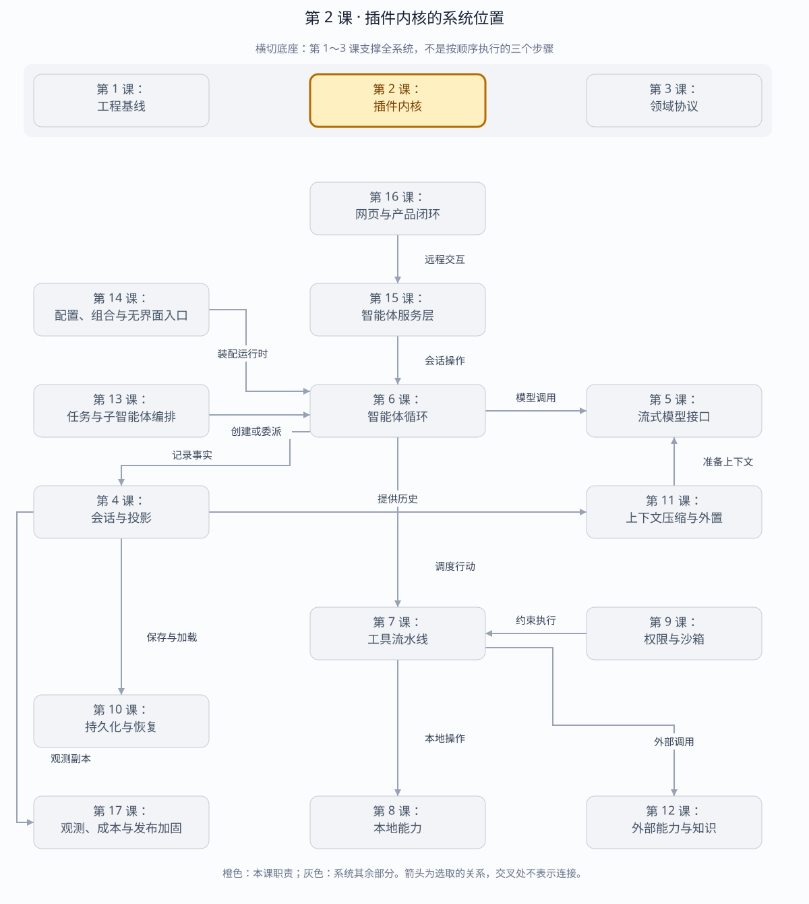

第 2 课：最小可逆插件内核
这一阶段只解决一个问题：能力怎样动态加入 Harness，又怎样在热重载、失败或退出时完整撤销。
章节概览（可选）：三框架职责摘要
本章对比：DeepSeek Harness / DeepAgents / OpenHands
口径：DeepSeek 依据本地原仓库（99f6f02fecdb），不是 harness-lab；deepagent 按 LangChain DeepAgents 理解；OpenHands 对比当前 Software Agent SDK，不混用旧 V0。在线资料核对于 2026-08-28，描述文档能力，不代表已在本实验室安装或测试。没有依据的同名能力不强行等同。
三者的关键区别：比较“插件”时先问它管理的是代码生命周期、调用拦截，还是能力分发；三者可以共存，但替换成本不同。（基于上述依据的归纳）
本章在全系统中的位置
横切运行时的装配与生命周期底座，决定哪些服务可用、由谁释放。
下面是本课程的概念地图，不是某框架的逐包调用图，也不表示实验室已默认装配全部能力。三套框架的实际对应关系见上方横向对比表。
全系统定位 · 橙色高亮第 2 课
打开大图 · Mermaid 图源
| 上游与输入 | 第 14 课的组合配置、插件声明及依赖。 |
|---|
| 下游与输出 | 向循环、工具、存储等模块提供已就绪服务；卸载时回收注册和资源。 |
|---|
| 不归本章负责 | 生命周期管理不是操作系统隔离；可信插件依然可以执行进程内代码。 |
|---|
| 放进具体场景 | 替换模型适配器时，先撤销旧注册再启用新服务；不能让被卸载插件的监听器继续响应。 |
|---|
接着看下方「可视化图解」：局部模块图解释职责，时序图解释一次调用，分支图解释异常与边界。
本课导览
| 包含内容 | 服务注册、插件装载、事件订阅、清理栈、失败回滚和卸载。 |
|---|
| 涉及模块 | Context、Service、Plugin、Effect、事件总线。 |
|---|
| 白话解释 | 插件像可插拔电器：插上就获得能力，拔掉时电线、监听器和资源都必须一起收走。 |
|---|
| 解决的问题 | 防止热重载和启动失败后遗留服务、监听器或进程，为后续能力提供统一生命周期。 |
|---|
点击下面的概念名称，可直达该概念的三框架实现、区别与依据。原有能力清单、示例和验收描述面向 harness-lab 教学实现；不要将其直接当作上游框架能力声明。
完整能力清单
| 能力 | 具体覆盖 | 边界 |
|---|
| 服务容器 | 发布、查找和撤销具名服务；拒绝重复服务键。 | 冲突失败时保留原服务。 |
| 插件装载 | 插件按顺序启动，并持有独立的子上下文和清理资源。 | 启动失败回滚本插件的部分注册。 |
| 事件系统 | 注册、触发并自动撤销随插件生命周期绑定的监听器。 | 卸载后监听器不再接收事件。 |
| 副作用清理 | 函数可返回同步或异步清理器，按后进先出顺序释放。 | 一个清理动作不能跳过其余动作。 |
| 容器释放 | 逆序卸载全部插件和服务，形成可重复的退出边界。 | 释放后容器回到干净状态。 |
主概念深挖：可逆插件生命周期
插件内核位于部署装配的下游、所有运行能力的上游；模型、工具、存储和服务端最终都通过同一生命周期加入或退出系统。
Bundle / Host（上游装配）
│ apply(plugin)
▼
HarnessContext ─► PluginContext ─► Service / Event / Effect
▲ │
└──── dispose / rollback ◄───────┘
│
▼
Agent、工具、存储（下游能力）
| 背景与目的 | 长时间运行的 Harness 需要动态增加能力，也必须在升级、失败和退出时撤销全部副作用。 |
|---|
| 输入与输出 | 输入是插件定义和宿主上下文；输出是已发布服务、事件监听器、运行资源及与之配对的清理动作。 |
|---|
| 适用场景 | 提供方切换、工具包装载、热重载、测试隔离、服务优雅停机。 |
|---|
| 底层组件 | 服务映射、事件监听集合、插件子上下文、后进先出清理栈和异步释放器。 |
|---|
| 核心逻辑 | 每次注册立即把逆操作压入插件自己的清理栈；启动失败或卸载时逆序执行，因此部分成功也能回到进入前状态。 |
|---|
| 权衡 | 显式生命周期增加注册和清理代码，但换来资源所有权清晰、可测试回滚和无闪断热替换基础。 |
|---|
| 方案对比 | 全局单例使用简单，却难以隔离和撤销；依赖注入容器可解析服务，但若没有 Effect 清理语义仍会泄漏外部资源。 |
|---|
场景穷举
插件装载
├─ apply 成功 → 发布服务/监听器 → dispose 逆序撤销
├─ apply 中途抛错 → 立即回滚已登记副作用
├─ 服务键冲突 → 拒绝新插件，原服务保留
├─ 清理器抛错 → 记录错误，继续释放剩余资源
└─ 热替换 → 候选成功后切换，再释放旧插件
| 场景 | 风险 | 期望行为 |
|---|
| 正常装卸 | 服务或监听器残留。 | 卸载后服务表和监听器数量回到装载前。 |
| 部分启动失败 | 前半段注册成功，后半段抛错。 | 子上下文逆序回滚所有已登记副作用。 |
| 重复服务 | 后插件静默覆盖前插件。 | 冲突在发布点失败，旧服务身份保持不变。 |
| 异步资源 | 进程、连接尚未关闭容器就退出。 | 释放流程等待异步清理器完成。 |
| 误用全局资源 | 插件直接改全局变量，内核不知道如何撤销。 | 要求插件把每个外部副作用配成 Effect 清理器。 |
多方案对比
| 方案 | 生命周期 | 隔离性 | 适用场景 |
|---|
| 全局单例 | 通常随进程结束。 | 低，测试和热重载互相污染。 | 一次性短程序。 |
| 普通依赖注入容器 | 擅长创建和查找对象。 | 中，外部资源清理需另行约定。 | 请求级无状态服务。 |
| 插件子上下文+Effect | 创建与逆操作强配对。 | 高，可回滚、可卸载。 | 长运行 Harness 与热重载。 |
关键设计反问
- 为什么清理要后进先出？
- 后创建的资源往往依赖先创建资源；逆序释放才能先关消费者，再关它依赖的服务。
- 为什么不能让新服务覆盖旧服务？
- 静默覆盖会让旧插件仍持有资源却失去可发现身份，形成泄漏和不确定路由。
- 插件启动失败后能否继续使用容器？
- 只有回滚证明容器恢复到装载前状态才可以；否则应把整个容器视为受污染并销毁。
四个最小抽象
| 抽象 | 职责 | 本课实现 |
|---|
| Context | 服务仓库和事件总线 | HarnessContext |
| Plugin | 一组一起创建、一起销毁的行为 | Plugin.apply() |
| Service | 通过稳定 key 暴露的直接能力 | provide/get |
| Effect | 带清理函数的可逆注册 | effect/dispose |
插件挂载
├── provide("clock") ── disposer A
├── on("message") ── disposer B
└── effect(resource) ── disposer C
插件卸载
└── C → B → A（后进先出）
关键不变量：插件启动到一半失败，也必须执行已经登记的 disposer。否则一次 HMR 或配置错误就会留下幽灵 Service、重复 listener 或未关闭资源。
服务容器：三框架分别怎么做？
同一个问题：Context / Service 在三者里是否同义？
这个概念的区别：Context 在这里分别接近服务作用域、运行上下文、提示词上下文，不能按名字映射。
插件装载：三框架分别怎么做？
同一个问题：加载插件时装入的是运行代码还是能力包？
这个概念的区别：代码生命周期、构造时组合和能力分发是三种不同的“插件”含义。
事件系统：三框架分别怎么做？
同一个问题：监听事件能否改写即将发生的行为？
这个概念的区别：必须区分控制钩子与事实通知；不能让一个审计监听器被误认为权限守卫。
副作用清理：三框架分别怎么做？
同一个问题：谁关闭 watcher、连接和定时器？
这个概念的区别：可逆注册不等于所有资源自动回收；每个外部资源都要找到确切所有者。
容器释放：三框架分别怎么做？
同一个问题：结束应用是否等同于结束一个会话？
这个概念的区别：应用容器、会话、执行环境要分别关闭，不能以一个 dispose 名字掩盖不同资源边界。
运行与断点
cd harness-lab
bun test
bun run demo
# 在 Chrome DevTools 或 VS Code 附加 9229
VS Code F5 → 01 · 插件内核
VS Code F5 → 00 · 当前 TypeScript 文件
建议按顺序在以下位置设置断点：
HarnessContext.mount()：观察独立 PluginContext 如何创建。PluginContext.effect()：观察 disposer 何时进入栈。HarnessContext.provide()：观察 Service 的 owner 和实例身份。PluginContext.dispose()：观察资源逆序回收。mount() 的 catch 分支：观察启动失败如何回滚。
自动验收
测试文件覆盖五个生命周期事实：
- Service 在插件卸载后不可访问。
- Event listener 在插件卸载后不再收到事件。
- Effect 按后进先出顺序释放。
- 插件启动失败后容器恢复干净状态。
- 两个插件争用同一个 Service key 时失败且不破坏原实例。
tests 5
pass 5
fail 0
练习：制造一个泄漏
临时删掉 PluginContext.on() 中的 effect() 包装，让监听器直接注册。预测哪个测试失败，再运行测试确认。恢复代码后，回答：
- 为什么 Service 方法适合直接调用，而策略拦截更适合 Event？
- 为什么 disposer 要做实例身份检查，而不能只按 key 删除？
- 为什么卸载顺序必须和注册顺序相反？
源码与一手参考
遇到断点或练习问题直接继续问我。下一课会在这个内核上加入强类型 Message、LLM、Tool 和 Session 协议。
返回完整路线 →